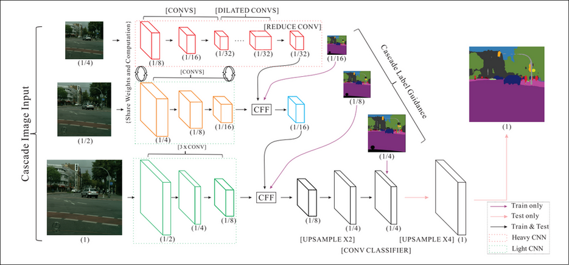
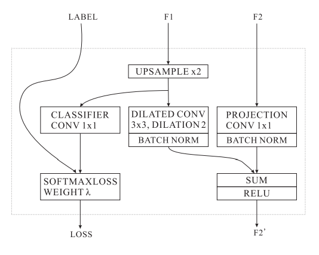

ICNet
Table of Contents
1. ICNet
https://arxiv.org/pdf/1704.08545.pdf 2018/4
icenet 是一个 semantic segmentation 模型, 和 ENet 一样注重推理速度.
它是一个多尺度训练 (multi-scale training) 的模型, 相当于三个独立的不同 scale 的 segmentation 模型, 但它 ensemble 的方式比较特殊.
1.1. Network

其中的 CFF (cascading feature fusion) 为:

1.1.1. train
- 第一层 1/4 scale 的图片输出为 1/32, 在 CFF 层经过 2x upsample 与 1/16 的 label 计算 loss
- 第一层 upsample 的结果与第二层输出的 1/16 feature 融合, 产生 1/16 的输出, 在 CFF 层 upsample 与 1/8 的 label 计算 loss
- 第二层 upsample 的结果与第三层输出的 1/8 feature 融合, 产生 1/8 的输出, 最后用 1/4 label 计算一次 loss
训练时没有执行最后的 4x upsample, 因为并没有使用原始 label 计算 loss. 所以上面计算的 3 个 loss 都相当于 Auxiliary Classifier
另外, 针对低分辨率使用的是 `Heavy CNN`, 高分辨率使用的是 `Light CNN`, 以减少计算量.
1.1.2. test
测试时不再需要 label, 且最后需要 4x upsample 来获得最终的结果.
Backlinks
Semantic Segmentation (Semantic Segmentation > Overview): - (c) 并行的输入或中间层的融合, 例如 deeplab, pspnet, icnet
Semantic Segmentation (Semantic Segmentation > ICNet): ICNet